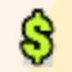

Guia para iniciantes do ROB RUN: por onde começar
Comece pelo tutorial: você foge da prisão para o Motel do Lenny e de lá vai para Looty Bay. Sem máscara você é civil, e morrer não custa nada. De máscara você é criminoso: precisa tirar o saque da cidade com vida, e ao morrer perde todo o inventário. Guarde o dinheiro numa conta no banco e espere a operação policial uma vez por semana.
Atualizado em . O jogo está em acesso antecipado e muda toda semana.
O tutorial passo a passo
- A prisão. Cuspa na gororoba, fale com o tatuador e fuja pela saída.
- O Motel do Lenny. Fale com o Lenny, desbloqueie uma pistola com munição, alugue um veículo e saia da área do motel.
- Looty Bay. Encontre um lugar deserto e coloque a máscara. Pegue um item valioso, venda ao receptador e pegue o dinheiro; depois roube algo valioso e saia da cidade com o saque.
O tutorial também passa pelo seu próprio terreno: alugar terra, colocar uma casa, vender o saque pelo laptop da sua base, lavar dinheiro na Mesa de Lavagem de Dinheiro e colocar um carro no armário de chaves. No fim o jogo diz “Você está livre!”: um só objetivo, subir do zero entre gente como você.

Civil, criminoso ou policial
- Civil: sem máscara. Você não perde seus pertences ao morrer, o tratamento é grátis, e dá para explorar a cidade com segurança e escolher um papel.
- Criminoso: de máscara. Dá para roubar, mas você só fica com o saque se sair vivo da cidade. Ao morrer, perde todo o inventário.
- Policial: o serviço na Delegacia de Palmside: como virar policial.
- Em Looty Bay o grupo todo só pode ter o mesmo papel.
- O Motel do Lenny é uma zona segura: armas não são permitidas lá.
O primeiro dinheiro
- Os trabalhadores das lojas tentam chamar a polícia quando veem um criminoso. Mire neles e eles mudam de ideia.
- Destrua as câmeras de vigilância antes que acionem o alarme. Em alguns prédios dá para arrombar o quadro elétrico e desativar as câmeras e o alarme.
- A gazua abre portas sem disparar o alarme, enquanto quebrar vidros pode dispará-lo.
- Venda itens ao receptador e cargas no Furgão do Contrabandista: onde ficam no mapa.
- Atrás de portas trancadas e em cofres costuma haver saque valioso, e as chaves aparecem pela cidade: o que cada chave abre.
- O Modo Solo (Difícil) começa no nível 4 de notoriedade, com chance de saque raro extra, e o Modo Duo no nível 2, com mais dinheiro por cargas e itens.


Receptador4 no mapa. Compra itens por dinheiro vivo. Furgão do Contrabandista2 no mapa. Compra cargas.
Furgão do Contrabandista2 no mapa. Compra cargas.
Como não perder tudo
- Se não houver saída, renda-se à polícia: você só perde o que está na bolsa e fica com o equipamento.
- Um jogador nocauteado pode ser reanimado antes que o tempo se esgote.
- Esconda-se em arbustos, armários e lixeiras: lá ninguém vê você nem o seu apelido.
- Matar civis aumenta o seu nível de procurado. No nível 3 você vira um dos mais procurados e a cidade toda vê você no mapa.
- Nos assentamentos não há polícia: são zonas fora da lei, e quem morre lá perde o equipamento e a bolsa.
Sua casa e o banco
- Um terreno se aluga com um título do terreno cujo nível corresponde ao do bairro. O título é usado num terreno vago de um assentamento que tenha dono.
- Cada construção tem o próprio Sistema de Segurança, e os fusíveis o reforçam: quantos decodificadores são necessários.
- Feche a porta da frente ao sair de casa.
- Para lavar dinheiro você precisa de uma conta no banco: como abrir conta e lavar dinheiro.
- O mundo continua sem você: o dinheiro é lavado e as cargas são abertas mesmo off-line.
A operação policial e a pena
- Cada estado dura 7 dias e depois vem a operação policial: timer do wipe.
- Tudo o que é confiscado no estado vira anos de pena: calculadora de pena e como a pena é calculada.
- A pena desbloqueia mais remessas do Lenny e tatuagens do tatuador.
O que fazer depois
No fim do tutorial o jogo lista o que você pode fazer:
- virar policial (guia);
- roubar qualquer coisa de qualquer pessoa;
- vasculhar lixeiras;
- transportar cargas (o que fazer com as cargas);
- assaltar as casas de outros jogadores (calculadora de decodificadores);
- montar uma fazenda subterrânea;
- montar um laboratório;
- comprar terrenos e arrecadar impostos sobre aluguéis;
- assumir o controle dos negócios na cidade;
- formar um clã e conquistar um bairro.
Perguntas frequentes
Por onde começar no ROB RUN?
Pelo tutorial: a prisão, o Motel do Lenny, o primeiro roubo em Looty Bay e o seu terreno. Depois abra uma conta no banco e guarde o dinheiro lá.
O que acontece quando você morre no ROB RUN?
Um civil não perde nada. Um criminoso perde todo o inventário, e nos assentamentos, onde não há polícia, quem morre perde o equipamento e a bolsa.
Como virar criminoso?
Encontre um lugar deserto e coloque uma máscara. Em Looty Bay só criminosos usam máscara.
Como ficar com o saque?
Saia vivo da cidade com ele. Se for encurralado, renda-se à polícia: você só perde a bolsa e fica com o equipamento.
Onde vender o saque?
Itens vão para o receptador e cargas para o Furgão do Contrabandista. Também dá para vender o saque pelo laptop da sua base.
Mais sobre ROB RUN
- Calculadora de pena
- Mapa de Looty Bay
- Chaves
- Conta no banco e lavagem
- Timer do wipe
- Como virar policial
- O que fazer com cargas
- Tatuagens
- Guias
Passos do tutorial, dicas das telas de carregamento e o Códex do jogo: textos do próprio jogo (24 nov 2026).